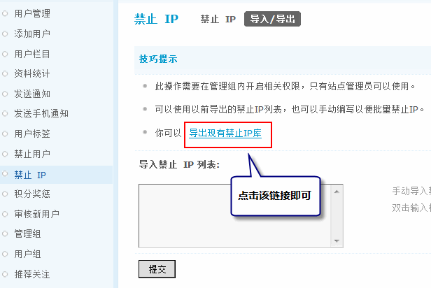

禁止IP
禁止 IP 也是有效防止灌水的方法之一，如果发现站点中有来自某一个或某一段 IP 地址的用户发布广告，恶意灌水，发表违规的内容时，管理员可以对此IP地址进行禁止操作，这样可以有效的避免在站点中出现不良信息，保护站点的安全。
操作路径：【后台】=>【用户】=>【禁止 IP】
禁止 IP：设置不允许访问站点的 IP，该功能的意义同禁止用户，通过禁止一些用户的 IP 地址或地址段来限制这些用户正常访问站点。
一、禁止IP的方法：
可以填入被禁止的具体IP地址，管理员可以使用通配符“*”来禁止某一IP地址段。被禁止IP的用户将在禁止有效期时无法登录站点。
添加好以后的效果如下：
该IP地址的用户将地址将无法登录站点，如果想解除禁止，可以直接选择该IP地址前面的复选框，点击删除即可。
另外，管理员在前台查看帖子的时候，也可以对IP进行查看和禁止。如图所示：
点击“禁止此IP”后系统会自动将该IP地址添加到后台的禁止 IP 列表中。
二、导入/导出
在 Discuz! X3 中新增加了批量导入/导出 IP 的功能。
1、导入禁止 IP 列表
可以使用以前导出的禁止 IP 列表，也可以手动编写 IP 列表，以便批量禁止 IP，如下图所示：
2、导出 IP
可以直接点击“导出现有禁止IP库”链接，可以直接导出所有已禁止的 IP 列表。
将以 Excel 文件格式导出所有IP地址。